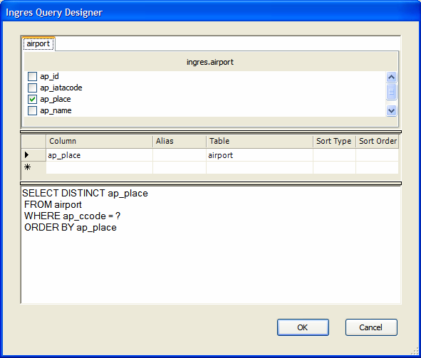

To construct the SELECT statement, use the Query Designer, which is part of the IngresDataAdapter wizard:

The wizard generates the following query string:
SELECT DISTINCT ap_place FROM airport WHERE ap_ccode = ? ORDER BY ap_place